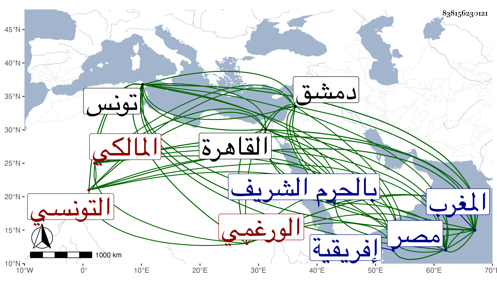

0902Sakhawi.DawLamic.ITO20230111-ara1.EIS1600.838156230121
Biography ID: 838156230121
586
محمد بن محمد بن محمد بن عرفة أبو عبد الله الورغمي بفتح الواو وسكون الراء وفتح المعجمة وتشديد الميم نسبة لو رغمة قرية من أفريقية التونسي المالكي عالم المغرب ويعرف بابن عرفة . ولد سنة ست عشرة وسبعمائة وتفقه ببلاده على قاضي الجماعة أبي عبد الله بن عبد السلام الهواري شارح ابن الحاجب الفرعي وعنه أخذ الأصول وقرأ القراآت على أبي عبد الله محمد بن محمد بن حسن بن سلامة الأنصاري ومن شيوخه في العلم والده وأبو عبد الله الوادياشي وسمع على الأربعة وآباء عبد الله الإيلي والمحمدين ابن سعد بن بزال وابن هرون الكناني وابن عمران بن الجباب وابن سليمان النبطي الفاسي وعلى أحمد بن عبد الله بن محمد الرصافي ومهر في العلوم وأتقن المعقول والمنقول إلى أن صار المرجوع إليه في الفتوى ببلاد المغرب وتصدى لنشر العلوم وكان لا يمل من التدريس وإسماع الحديث والفتوى مع الجلالة عند السلطان فمن دونه والدين المتين والخير والصلاح والتوسع في الجهات والتظاهر بالنعمة في مأكله وملبسه والإكثار من التصدق والإحسان للطلبة مع إخفائه لذلك . قال شيخنا في معجمه : قدم علينا حاجا في سنة ست وتسعين فلم يتفق لي لقاؤه ولكنني استدعيت منه الإجازة فأجاز لي وكتب لي ما نصه : أجزت كاتبها ومن ذكر معه جميع ما ذكر إجازة تامة بشرطها المعروف جعلني الله وإياه من أهل العلم النافع . وصنف مجموعا في الفقه جمع فيه أحكام المذهب سماه المبسوط في سبعة أسفار إلا أنه شديد الغموض واختصر الحوفي في الفرائض ونظم قراءة يعقوب وعلق عنه بعض أصحابنا كلاما في التفسير كثير الفوائد في مجلدين كان يلتقطه في حال قراءتهم عليه ويدونه أولا فأولا قال شيخنا في إنبائه وكلامه فيه دال على توسع في الفنون وإتقان وتحقيق انتهى . وكذا صنف في كل من الأصلين والمنطق مختصرا جامعا . ولم يزل على حاله من العظمة والسودد حتى مات في رابع عشرى جمادى الآخرة سنة ثلاث بتونس ولم يخلف بعده مثله وقد حدثني عنه جماعة فيهم ممن أخذ عنه التفسير والحديث والفقه وغيرها يحيى العجيسي ، وأجاز أيضا لغير واحد ممن كتبت عنهم وروى الرسالة عن أبي عبد الله بن عبد السلام والوادياشي كلاهما عن أبي محمد بن هرون عن أبي القسم بن الطيلسان عن عبد الحق بن محمد بن عبد الحق عن أبي عبد الله محمد بن فرج مولى ابن الطلاع عن أبي محمد مكي عن ابن زيد والموطأ عن أولهما أنا ابن هرون به وكذا قرأ عليه علوم الحديث لابن الصلاح بقراءته له على أبي العباس أحمد البطرني أنا به أبو محمد عبد الله بن محمد بن أحمد اللخمي سماعا أنا به مؤلفه سماعا في سنة أربع وثلاثين وستمائة بالأشرفية بدمشق وصحيح البخاري ومسلم والشفا عن ثانيهما وذكره ابن الجزري في طبقات القراء فقال : فقيه تونس وإمامها وعالمها وخطيبها في زماننا . ولد سنة عشر وسبعمائة وتبحر في العلوم وفاق في الأصلين والكلام وتقدم في الفقه والنحو والتفسير قرأ على ابن سلامة بمضمن التيسير والكافي وروى أيضا عن ابن عبد السلام شارح المختصر ذكره عبد الله بن محمد بن غالب في تحقيقه فقال أخذ العلم عن جماعة من العلماء ، الجلة منهم والده وأبو عبد الله الوادياشي وغيرهما ، قال ابن الجزري ولم تزل الحجاج ترد علينا بأخباره السارة حتى كنت في الديار المصرية سنة اثنتين وتسعين فقدمها حاجا فاجتمعنا به بالقاهرة وحججنا جميعا بالحرم الشريف واستجزته تجاه الكعبة فأجازني وأولادي ثم رجعنا إلى لاديار المصرية فاجتمعت به كثيرا فأنشدته وأنشدني وتوجه لبلاده في ربيع من التي بعدها ولم أر مغربيا أفضل منه . وقال الصلاح الأقفهسي في معجم ابن ظهيرة أنه تفقه وبرع في الأصول والفروع والعربية والمعاني والبيان والفرائض والحساب والقراآت وكان رأسا في العبادة والزهد والورع ملازما للإشغال بالعلم رحل الناس إليه وأخذوا عنه وانتفعوا به ولم يكن ببلاد المغرب من يجري مجراه في التحقيق ولا من اجتمع له من العلوم ما اجتمع له ولقد كانت الفتوى تأتيه من مسافة شهر ، وله مؤلفات مفيدة ، وصدر ترجمته بالفقيه الإمام العلامة ذي الفنون الخطيب الإمام بمسجد الزيتونة بمدينة تونس وسماه محمد بن محمد بن عرفة فأسقط محمدا الثالث من نسبه كما أن ابن الجزري لم يصب في مولده وكذا ما رأيته في نسختي بمعجم شيخنا أنه سنة ست وثلاثين لأن شيخنا نفسه قال في إنبائه أنه مات وهو ابن سبع وثمانين . وهو موافق لما قاله غير واحد في كون مولده سنة ست عشرة ، وصدر شيخنا ترجمته في إنبائه بشيخ الإسلام بالمغرب ، وقال ابن عمار أنه قدم القاهرة حاجا في سنة ثلاث وتسعين وسبعمائة فأخذ عنه المصريون مع اعتذاره بالضعف وكان القائل ممن أخذ عنه وأذن له في الإفتاء وترجمه بقوله أمام حافظ وقته تفقه بمذهبه مشرقا ومغربا انتهت الرياسة إليه بقطر المغرب أجمع في التحقيق والفتوى والمشاورة مع خشونة جانب وشدة عارض وبراءة من المداهنة وحذر من المحاسنة وله كتاب في الفقه سماه المختصر يبلغ عشرة أسفار أو دونها جامع لغالب أمهات المذهب والنوازل والفروع الغربية وكثرة البحث مع ابن شاس في الجواهر وابن بشير في التنبيه وابن الحاجب في اختصاره لهذين الكتابين وشيخه ابن عبد السلام في شرحه على ابن الحاجب إلا أنه التفقه به صعب انتهى . وبلغني أن بعض أولي الأحوال والخطوات كان يقصده بالقراءة والتفقه في كل يوم من مسافة أيام وأن بغلة الشيخ نفقت ودامت أياما لا يتعرض لها كلب ولا غيره فلما بلغه ذلك قال لمن تعجب منه أتعجبون من ذلك وقد قرأت على ظهرها القرآن من العدد آلافا ، إلى غيرها من الكرامات ، وهو في عقود المقريزي وأنه اختصر الحوفي في الفرائض ونظم قراءة يعقوب . ومن نظمه :
| إذا لم يكن في مجلس العلم نكتة | لتقرير إيضاح لمشكل صورة |
| وعزو غريب النقل أوحل مشكل | أو إشكال أبدته نتيجة فكرة |
| فدع سعيه وانظر لنفسك واجتهد | ولا تتركن فالترك أقبح خلة |
وقوله :
| بلغت الثمانين وبضعا لها | وهان على النفس صعب الحمام |
| وأمثال عصري مضوا دفعة | وصاروا خيالا كطيف المنام |
| وكانت حياتي بلطف جميل | لسبق دعاي ربي في المقام |
